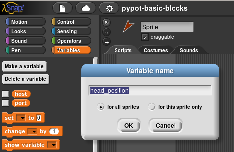

Control a Poppy robot using Snap!¶
Introducing Snap!¶
snap visual programming language is a “very powerful visual, drag-and-drop programming language. It is an extended reimplementation of Scratch (a project of the Lifelong Kindergarten Group at the MIT Media Lab) that allows you to Build Your Own Blocks”. It is an extremely efficient tool to learn how to program for kids or even college students and also a powerful prototyping method for artists.
Snap! is open-source and it is entirely written in javascript, you only need a browser connected to the Poppy Creature webserver. No installation is required on your computer!

An introduction to this laguage can be found in the Snap! reference manual.
Create the Snap! server¶
There are several ways of creating a Snap! server to control your robot.
Warning! At some point of this tutorial, you will have to import Poppy Humanoid’s specific Snap! blocks. This may take a few minutes, so keep the script running if your browser asks what to do.
Start the server on the robot¶
The easiest way of controlling your Poppy robot with Snap! is to use the webapp TODO. This will launch the server and use the Snap! software installed on the robot.
Then hit the folder button, select open...->example and choose pypot-snap-block.

Alternately (if you don’t have the webapp), you can use the following command inside the robot:
poppy-snap poppy-humanoid --no-browser
The command gives you an URL (something like http://snap.berkeley.edu/snapsource/snap.html#open:http://-ROBOT-IP-:6969/snap-blocks.xml). Open this URL in your web browser.
Start the server on your computer¶
Use this method if you use the motors directly linked to your computer:
from poppy_humanoid import PoppyHumanoid poppy = PoppyHumanoid(use_snap=True) poppy.snap.run()
You can even use simultaneously Snap! and V-rep:
from poppy_humanoid import PoppyHumanoid poppy = PoppyHumanoid(simulator='vrep', use_snap=True) poppy.snap.run()
Leave the Python script running. In you web browser, open the following URL:
http://snap.berkeley.edu/snapsource/snap.html#open:http://127.0.0.1:6969/snap-blocks.xml
Last solution: you can even, if you don’t have a reliable internet connection when you use Snap!, download and install Snap! directly on your computer from here.
Then, open the snap.html file with your web browser and use the folder button->import.. to import the Poppy specific blocks located in pypot/pypot/server/snap_projects.
Controlling the robot¶
Pypot Snap! blocks¶
The Poppy Snap! blocks are the following:

Those blocks can be used to respectively:
- test if connection with poppy robot is working well
- get a list of all motors name
- get a list of all motors refered by an alias
- get the value of a register motor (e.g. get motor “head_z” register “present_load”)
- get the index of a motor
- get all alias avaible for the current robot
- set a motor position in a specified time
- turn a motor compliant or not
- set a register of a motor (e.g. set motor “head_z” register “present_load” to 10)
- create/attach a move to some motors (you have to create a move before to record or replay it)
- stop the record of a move
- start the record of a move
- play a move at a defined speed
- play a move in reverse at a defined speed
- play concurently many moves
- play sequentialy many moves
You can easily see all blocks relative to poppy in Snap! with the “find blocks” feature. You have to right-click in the left part of Snap! page and select “find blocks”:

Use a slider to move a motor¶
To control a motor via a slider you need to make a variable - we will call it head position.

Then right click on it and use the slider option. Change the slider min/max to (-50, 50).

Then, connect it to a motor: use the motor(s) goto position block and put it inside a forever loop. Add a wait for performance issue.

Example: playing a sinus on a motor¶
Having a motor position follow a sinus function is very useful to get smooth periodic moves, as waving with the hand or saying ‘no’ with the head.
Can you, from this image, program your robot to say ‘yes’ or ‘no’ with the head?

Record and play moves using Snap!¶
If you opened the Snap! server using the webapp, you can directly load the example called pypot-snap-record-orchestration-demo instead of poppy-snap-blocks to find a ready-to-use Snap! project dedicated to the record and replay of moves.
Otherwise, use the folder button->import.. and select pypot/pypot/server/snap_projects/pypot-snap-record-orchestration-demo.xml